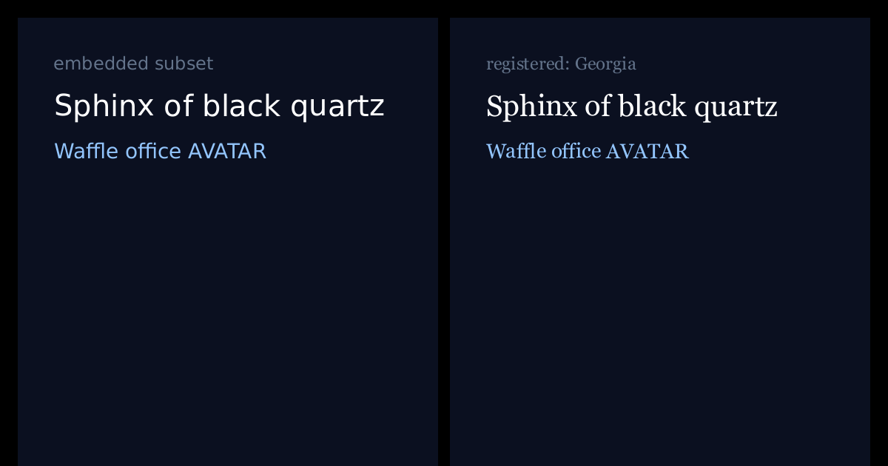
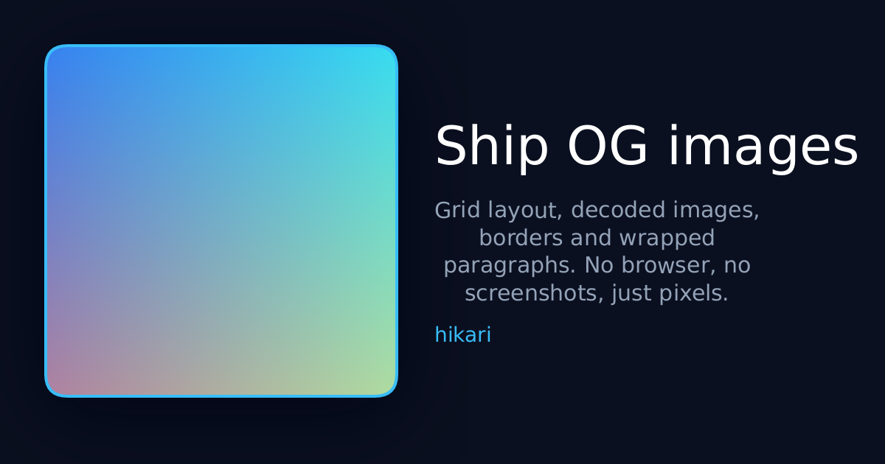
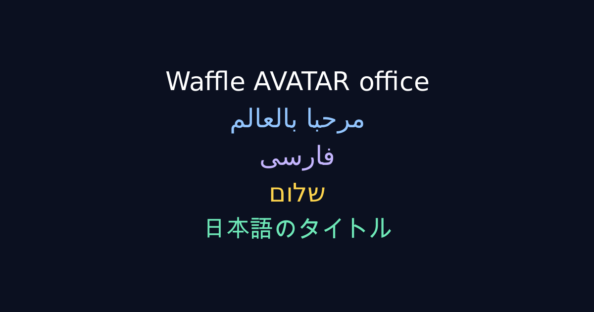
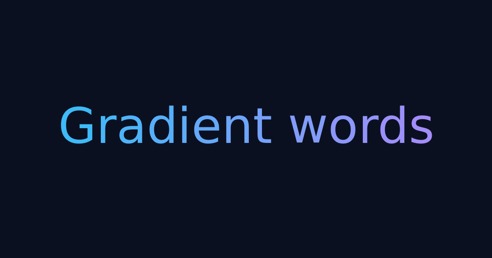

Images from layout trees.
No browser.
A pure-Rust render engine. One node tree in — PNG, SVG, animated GIF, WebP and PDF with selectable text out. Runs natively, in Node.js, and in the browser.
Open core, MIT / Apache-2.0. No forked dependencies, no network calls.

cargo add hikari-rs
# or
npm i @hikari-rs/nodeMeasured, not claimed
Numbers, and where they came from
Apple M2, macOS ARM64, rustc 1.98, release profile. Every figure in the project is published with the machine that produced it — including the ones that are unflattering.
Output is byte-identical across platforms — the same SHA-256 on macOS and Linux — which is what makes the renderer snapshot-testable at all. Full benchmarks, methodology and corrections →
Output
Real renders, not mockups
Every image below was produced by the engine at build time. Nothing here is a design asset.



Scope
What it does, and where it stops
Flex, grid and block flow. Gradients, box shadows, rounded clips, images with decode caching.
Real OpenType shaping: joining, kerning and ligatures. Bidi, word wrap, balanced headlines, fit-to-width.
PDF with selectable text, outlines, link annotations, attachments and pagination.
Animated GIF and APNG, frames rendered in parallel.
An embedded subset by default, plus caller-supplied fonts by id, inherited through the tree.
Rust, Node.js via napi, and WebAssembly. No C zlib anywhere in the dependency tree.
Two things to know before you rely on it.
The shaper, rustybuzz, is declared unmaintained upstream,
as is ttf-parser; migrating to the
fontations stack is the project's top open item.
And CJK falls back to a system font, so byte-identical output holds
for every script the embedded font covers but not for CJK.
Both are documented, with the rest, in the README's limitations.
The playground runs the WebAssembly build in this page. No account, no upload, nothing leaves the browser.
The whole engine is in the repository, including the font subsetter and the licensing check. Nothing is obfuscated.